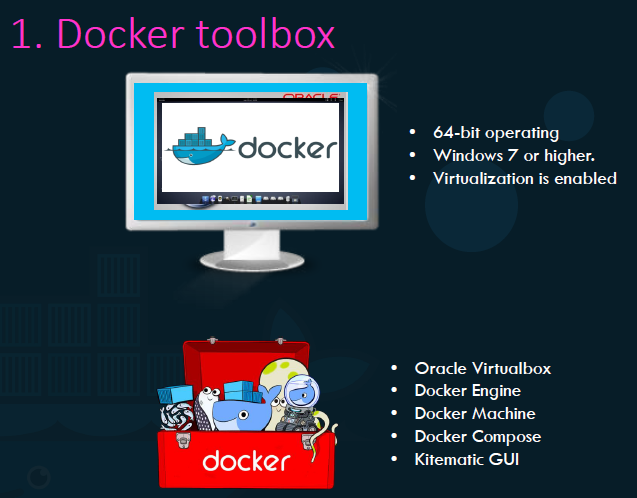

Prima vecchia opzione:
Docker toolbox creava una VM Linux e ci faceva girare Docker.

Nuova opzione più recente:
Sfruttare Microsoft Hyper-V al posto di VirtualBox.

NB: Tutte queste opzioni, alla fine, basano Docker su un sistema Linux!
Per cambiare su Windows Container, bisogna eseguire l'opzione in altro a destra per switchare i container.
Windows ha creato 2 modi di containerizzare:
1) Modo normale, con Kernel e Containers che shareno il Kernel
2) Hyper-V Isolation, dove ogni Container ha una iperottimizzata VM per se stesso.
Le immagini di base per Windows sono:
1) Windows Server Core,
2) Nano Server: E' un opzione headless per il deployment, dove runna una frazione in ambito di size del sistema operativo.
Il suo equivalente Linux: Alpine-Linux.

Ricorda: VirtualBox ed Hyper-V non possono coesistere sulla stessa macchina.
Per più specifiche, consulta la guida di Docker per migrare da uno all'altro.